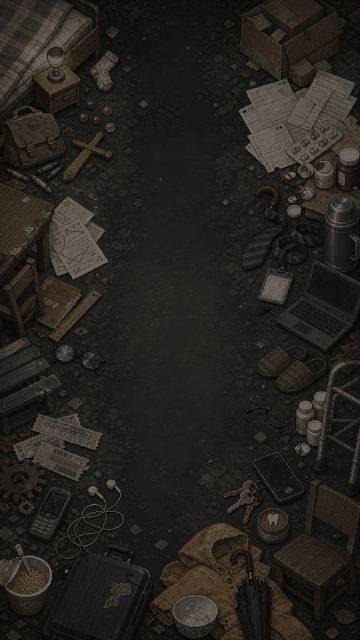
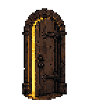
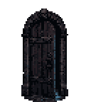
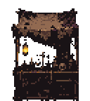
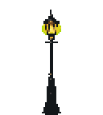
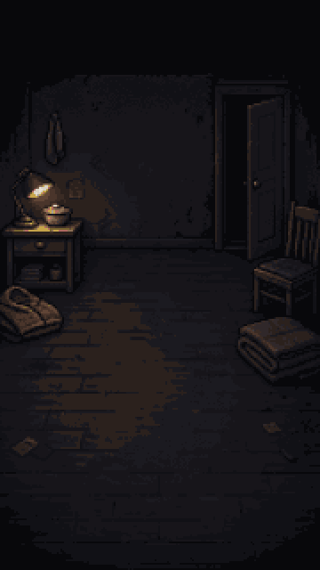

主角人偶
标准身形 · 40×56 帧 · 发色/衣着/伤痕由代码实时改写


开屏与六章地面
非夜间正典 · 清晨到苍白午后，只有终局入夜


六章战场照明 · 清晨 / 白昼 / 傍晚 / 饭桌灯 / 日光灯 / 苍白午后
场景摆设 · 六章二十四件
随奔跑在脚下渐变换代童年 · 床底王国


少年 · 千眼教室


青年 · 齿轮车站


成年 · 屋檐下的家


中年 · 没有关灯的办公室


暮年 · 白发荒原


门、灯与房间
战场可交互实体与三间内景
地图上限时刷新 · 走进去触发

地图上限时刷新 · 走进去触发

怪潮间隙路边出现

黑暗收拢的圆心 · 收灯人在它底下现身



章节题图与命运纹样
转场与命运牌共用纹样
结局定格
人活一口气 · 收灯人一盏灯剥一件道具